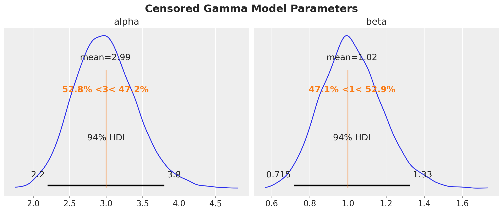

Probabilistic Time Series Forecasting
Opportunities and Applications
Why Probabilistic Forecasting?

- Interpretability
- Trust on the results
- Uncertainty quantification
- Risk Assessment
- Decision Making
- Customization
- Feature engineering
- Special constraints
- Calibrate with domain knowledge
- Scale
- Good results on production environments
- Take advantage of GPU
Pyro Forecasting Module 🔥


NumPyro - SGT Example Model 🫠

😅 …
Example: Exponential Smoothing

Example: Exponential Smoothing
Posterior Distribution Parameters

Example: Exponential Smoothing

Example: ARMA(1, 1) Model
def transition_fn(carry, t):
y_prev, error_prev = carry
ar_part = phi * y_prev
ma_part = theta * error_prev
pred = mu + ar_part + ma_part
error = y[t] - pred
return (y[t], error), error
Hierarchical Exponential Smoothing

Hierarchical Exponential Smoothing

Intermittent Time Series

Croston’s Method
def croston_model(z: ArrayLike, p_inv: ArrayLike, future: int = 0) -> None:
z_forecast = scope(level_model, "demand")(z, future)
p_inv_forecast = scope(level_model, "period_inv")(p_inv, future)
if future > 0:
numpyro.deterministic("z_forecast", z_forecast)
numpyro.deterministic("p_inv_forecast", p_inv_forecast)
numpyro.deterministic("forecast", z_forecast * p_inv_forecast)
TSB Method
1 - Step Ahead Time Slice Cross Validation

Time-Slice Cross Validation

Hacking the TSB Model 🪛

Hacking the TSB Model

ARIMA Model

Censored Distributions




Hierarchical Pricing Elasticity Models

Idea 🤓
Use a hierarchical structure to regularize the demand elasticity parameters.
Hierarchical Pricing Elasticity Models

Dynamic Time-Series Model

Dynamic Coefficients
Hilbert Space Gaussian Processes for Dynamic Coefficients

Inferring Effect of Temperature on Electricity Demand

Calibrating a Demand Model 🧪
Let us assume that we know from domain knowledge that the effect of temperature on demand over 32°C is somehow stable at around a value of 0.13.

MMM Calibration with Lift Tests

Thank you!